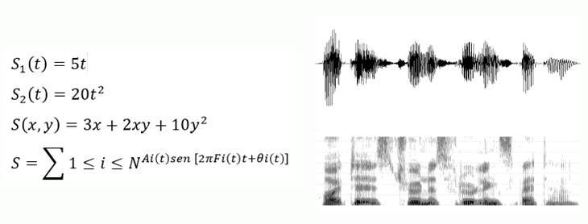
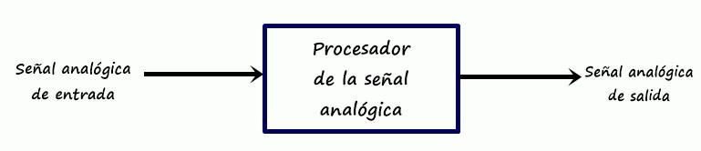
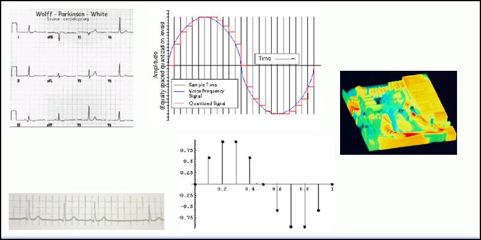
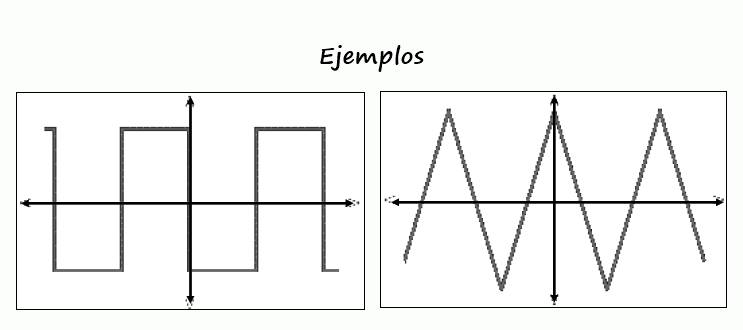
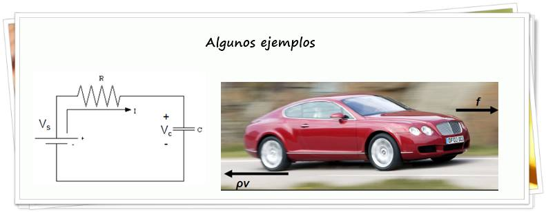

1. Introducción
2. Clasificación de las señales
3. Clasificación de los sistemas
4. Energía y potencia de las señales
1. Introducción.
Una señal está definida como una cantidad física que varía en el tiempo, espacio, o con otra(s) variable(s)

¿Cómo se generan las señales?
* La generación de la señal está asociada con un sistema que responde al estímulo
* El estímulo en combinación con el sistema es llamado fuente de la señal
* Un sistema se puede definir como un dispositivo físico que efectúa una operación a una señal. * La realización de esas operaciones son referidas como procesamiento de la señal.
Elementos básicos de un sistema PDS.
* La mayoría de las señales son analógicas por naturaleza.
* Estas señales son funciones de una variable continua (tiempo, espacio).
* Pueden procesarse con sistemas analógicos (filtros o analizadores de frecuencia).
* En estos casos la señal se ha procesado directamente en su forma analógica.

* El procesamiento de la señal digital nos da un método alternativo para procesar la señal analógica.
*Se requiere de una interfaz: Convertidor A/D
*En ciertas aplicaciones requerimos de otra interfaz: Un convertidor D/A.
Los métodos a emplear en el procesamiento ó análisis de una señal depende en gran medida de sus características
* Señales multicanal y multidimensionales.
* Señales continuas y discretas en el tiempo.
* Señales con valores continuos y con valores discretos.
* Señales determinísticas y aleatorias.
* Señales pares e impares.
* Señales periódicas y aperiódicas.
* Señales de energía y potencia.

Señales pares e impares.
Una señal par satisface: x(-t) = x(t) para todo t
Una señal impar satisface: x(-t) = -x(t) para todo t
Las señales pares son simétricas.
Las señales impares son antisimétricas.

Señales periódicas y aperiódicas.
Una señal es periódica sí y solo sí: x(t + T0) = x(t), -∞ < t < ∞
Donde la constante T0 es el periódo.
El menor valor de T0 que satisface la condición de periodicidad es el periódo fundamental de la señal.
Una señal que no satisface la condición de periodicidad es una señal aperiódica.
¿Cuál de las siguientes señales es periódica?
1. X1(t) = sen 10πt
2. X2(t) = sen 20πt
3. X3(t) = sen 31t
4. X4(t) = X1(t) + X2(t)
5. X5(t) = X1(t) + X3(t)
Determina las componentes par e impar de las siguientes señales:
X(t) = cos t + sen t + sen t * cos t
X(t) = 1 + t + 3t2 + 5t3 + 9t4
Señales de energía y potencia.
Una señal es de energía sí y solo sí su energía total E cumple 0 < E < ∞
Una señal es de potencia sí y solo sí su potencia promedio P cumple 0 < P < ∞
Un sistema continuo es un dispositivo que opera sobre una señal continua en el tiempo, llamada entrada o excitación, para producir otra señal continua en el tiempo llamada salida o respuesta del sistema.
La señal de entrada x(t) es transformada por el sistema en la señal y(t).
Esta relación se expresa: y(t) ≡ T[x(t)] donde el operador T denota la transformación o procesamiento efectuado a x(t)

Clasificación de sistemas.
Sistemas sin memoria ó estáticos. Cuando la salida de cualquier valor de t depende solo de la entrada en el mismo valor de t.
y(t) = x(t)2
y(t) = Rx(t)
y(t) = ax(t) + bx3(t)
Sistemas con memoria ó dinámicos. Cuando la salida en un valor t depende de las entradas en el intervalo: [t - T, t], T ≥ 0, se dice que el sistema tiene memoria de duración T. Si T = 0 el sistema es estático.
y(t) = x(t) + 3x(t-1)
y(t) = 1/C ∫∞t x(τ)dτ
Sistemas invariantes con el tiempo. Son aquellos sistemas para los que un desplazamiento temporal de la secuencia de entrada provoca el mismo desplazamiento en la secuencia de la salida.
Si para x1(t) = x(t - t0) se produce y1(t) = y(t-t0)
Sistemas variantes con el tiempo. Aquellos donde la salida cumple con y1(t) ≠ y(t - t0), incluso para un solo valor de t0 .
Determinar si los siguientes sistemas son invariantes:
y(t) = x(t) - x(t - 1)
y(t) = tx(t)
y(t) = x(-t)
y(t) = x(t) cos ωt
Sistemas lineales. Definidos por el principio de superposición.
Sean yi(t) e y2(t) las respuestas a las entradas x1(t) y x2(t), el sistema es lineal solo sí:
Sistemas no lineales. Aquellos que no satisfacen el principio de superposición.
Un sistema lineal en reposo, es aquel que a una entrada cero, produce una salida cero.
Un sistema que produce una salida diferente de cero cuando la entrada es cero no está en reposo, o no es lineal.
Determinar si los siguientes sistemas son lineales:
y(t) = tx(t)
y(t) = x(t2)
y(t) = x2(t)
y(t) = Ax(t) + B
y(t) = ex(t)
Sistemas causales.
Cuando para cualquier valor de t0 , el valor de la secuencia de salida en t = t0 depende solo de los valores de entrada para t ≤ t0 . Es decir, la salida depende de las entradas pasadas y presentes.
Sistemas no causales.
Aquellos que no cumplen las condiciones de causalidad.
Sistemas estables.
Un sistema es estable en el sentido de entrada acotada y salida acotada.
La entrada x(t) está acotada si existe un valor finito positivo Bx tal que |x(t)| ≤ Bx < ∞, para todo t.
La estabilidad requiere que para cualquier entrada acotada exista un valor finito positivo fijo By , tal que |y(t)| ≤ By < ∞, para todo t.
Sistemas inestables.
Aquellos que no cumplen con las condiciones de estabilidad.
La potencia se calcula sobre un solo periodo T0, esto es:
Determinar la potencia de: x(t) = Ae j(ωt + θ)
Densidad espectral de Energía y Potencia.
Para una señal de energía x(f), cuando una función de frecuencia se integra obtenemos su densidad espectral de energía G(f). Por definición, tenemos que la energía total de la señal es:
Determina el espectro de densidad de potencia y la potencia promedio en la banda de 10Hz a 20Hz de la señal: